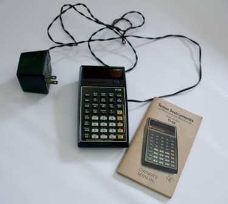
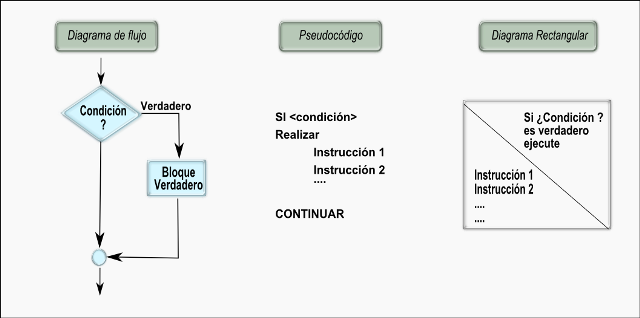
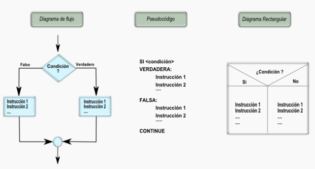
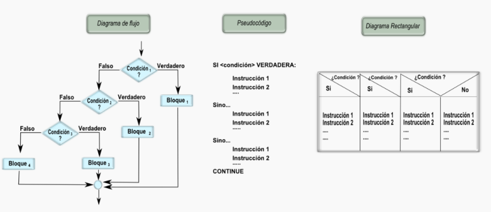
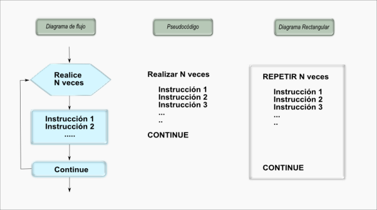
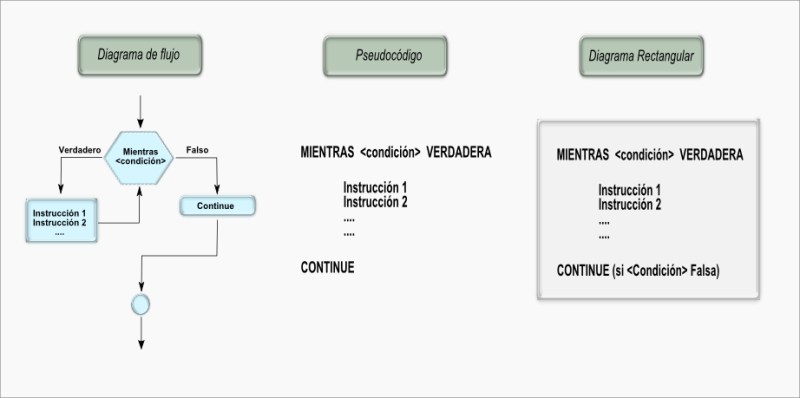
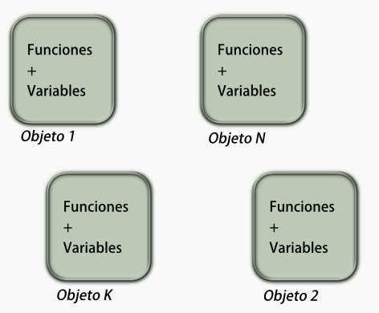
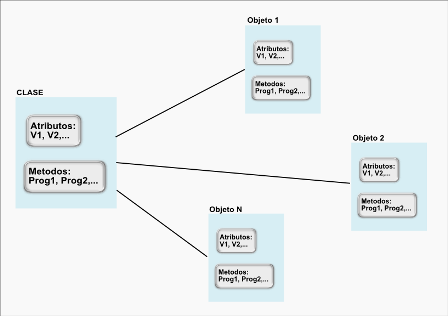

Licencias y créditos de los recursos utilizados
- Jaime A. Valencia
- Facultad de informática, electrónica y conunicación
- Universidad de Panamá
- GALEANO, 2011a

Herramientas de cálculo
GALEANO, Sandra. Herramientas de cálculo
[Imagen en línea]
<http://aprendeenlinea.udea.edu.co/boa/index.php?page=Pages.Objetos.VerObjeto&id=608>
[citado en 2012-01-24]
Licencia: Creative Commons by-nc-sa (Atribución, no comercial, compartir bajo la misma licencia).- GALEANO, 2011b

Calculadora programable
GALEANO, Sandra. Calculadora programable
[Imagen en línea]
<http://aprendeenlinea.udea.edu.co/boa/index.php?page=Pages.Objetos.VerObjeto&id=605>
[citado en 2012-01-24]
Licencia: Creative Commons by-nc-sa (Atribución, no comercial, compartir bajo la misma licencia).- GALEANO, 2011c

Reglas de cálculo
GALEANO, Sandra. Reglas de cálculo
[Imagen en línea]
<http://aprendeenlinea.udea.edu.co/boa/index.php?page=Pages.Objetos.VerObjeto&id=720 >
[citado en 2012-01-25]
Licencia: Creative Commons by-nc-sa (Atribución, no comercial, compartir bajo la misma licencia).- GALEANO, 2011d

Calculadora programable ti-55
GALEANO, Sandra. Calculadora programable ti-55
[Imagen en línea]
<http://aprendeenlinea.udea.edu.co/boa/index.php?page=Pages.Objetos.VerObjeto&id=603>
[citado en 2012-01-25]
Licencia: Creative Commons by-nc-sa (Atribución, no comercial, compartir bajo la misma licencia).- GALEANO, 2011e

Esquema de arquitectura de un computador
GALEANO, Sandra. Esquema de arquitectura de un computador
[Imagen en línea]
<http://aprendeenlinea.udea.edu.co/boa/index.php?page=Pages.Objetos.VerObjeto&id=614 >
[citado en 2012-01-25]
Licencia: Creative Commons by-nc-sa (Atribución, no comercial, compartir bajo la misma licencia).- GALEANO, 2011f

Clasificación de los tipos de datos
GALEANO, Sandra. Clasificación de los tipos de datos
[Imagen en línea]
<http://aprendeenlinea.udea.edu.co/boa/index.php?page=Pages.Objetos.VerObjeto&id=613 >
[citado en 2012-01-25]
Licencia: Creative Commons by-nc-sa (Atribución, no comercial, compartir bajo la misma licencia).- GALEANO, 2011g

Ideas al pc
GALEANO, Sandra. Ideas al pc
[Imagen en línea]
<http://aprendeenlinea.udea.edu.co/boa/index.php?page=Pages.Objetos.VerObjeto&id=611 >
[citado en 2018-11-22]
Licencia: Creative Commons by-nc-sa (Atribución, no comercial, compartir bajo la misma licencia).- GALEANO, 2011h

Ciclo de solución de problemas
GALEANO, Sandra. Ciclo de solución de problemas. Tomada de http://www.beyondlean.com/problem-solving.html. Página compartida acorde con las políticas de uso de Social Media,y adaptada por GALEANO, Sandra.
[Imagen en línea]
<http://aprendeenlinea.udea.edu.co/boa/index.php?page=Pages.Objetos.VerObjeto&id=615 >
[citado en 2012-01-30]
Licencia: Creative Commons by-nc-sa (Atribución, no comercial, compartir bajo la misma licencia).- GALEANO, 2011i

Ciclo de solución de problemas con computador
GALEANO, Sandra. Ciclo de solución de problemas con computador
[Imagen en línea]
<http://aprendeenlinea.udea.edu.co/boa/index.php?page=Pages.Objetos.VerObjeto&id=616 >
[citado en 2012-01-30]
Licencia: Creative Commons by-nc-sa (Atribución, no comercial, compartir bajo la misma licencia).- GALEANO, 2011j

Modelo simplificado de procesos de un computador
GALEANO, Sandra. Modelo simplificado de procesos de un computador
[Imagen en línea]
<http://aprendeenlinea.udea.edu.co/boa/index.php?page=Pages.Objetos.VerObjeto&id=617 >
[citado en 2012-01-30]
Licencia: Creative Commons by-nc-sa (Atribución, no comercial, compartir bajo la misma licencia).- GALEANO, 2011k

De grafos a códigos
GALEANO, Sandra. De grafos a códigos
[Imagen en línea]
<http://aprendeenlinea.udea.edu.co/boa/index.php?page=Pages.Objetos.VerObjeto&id=618 >
[citado en 2012-02-01]
Licencia: Creative Commons by-nc-sa (Atribución, no comercial, compartir bajo la misma licencia).- GALEANO, 2011l

Esquema de un diagrama de flujo
GALEANO, Sandra. Esquema de un diagrama de flujo
[Imagen en línea]
<http://aprendeenlinea.udea.edu.co/boa/index.php?page=Pages.Objetos.VerObjeto&id=628 >
[citado en 2012-02-01]
Licencia: Creative Commons by-nc-sa (Atribución, no comercial, compartir bajo la misma licencia).- GALEANO, 2011m

Esquema de un diagrama rectangular
GALEANO, Sandra. Esquema de un diagrama rectangular
[Imagen en línea]
<http://aprendeenlinea.udea.edu.co/boa/index.php?page=Pages.Objetos.VerObjeto&id=629 >
[citado en 2012-02-01]
Licencia: Creative Commons by-nc-sa (Atribución, no comercial, compartir bajo la misma licencia).- GALEANO, 2011n

Esquema de representación en Pseudo código
GALEANO, Sandra. Esquema de representación en Pseudo código
[Imagen en línea]
<http://aprendeenlinea.udea.edu.co/boa/index.php?page=Pages.Objetos.VerObjeto&id=627 >
[citado en 2012-02-01]
Licencia: Creative Commons by-nc-sa (Atribución, no comercial, compartir bajo la misma licencia).- GALEANO, 2011o

Representación de la asignación
GALEANO, Sandra. Representación de la asignación
[Imagen en línea]
<http://aprendeenlinea.udea.edu.co/boa/index.php?page=Pages.Objetos.VerObjeto&id=625>
[citado en 2012-02-01]
Licencia: Creative Commons by-nc-sa (Atribución, no comercial, compartir bajo la misma licencia).- GALEANO, 2011p

Esquema de decisión simple
GALEANO, Sandra. Esquema de decisión simple
[Imagen en línea]
<http://aprendeenlinea.udea.edu.co/boa/index.php?page=Pages.Objetos.VerObjeto&id=718 >
[citado en 2012-02-01]
Licencia: Creative Commons by-nc-sa (Atribución, no comercial, compartir bajo la misma licencia).- GALEANO, 2011q

Esquema de decisión doble
GALEANO, Sandra. Esquema de decisión doble
[Imagen en línea]
<http://aprendeenlinea.udea.edu.co/boa/index.php?page=Pages.Objetos.VerObjeto&id=621 >
[citado en 2012-02-01]
Licencia: Creative Commons by-nc-sa (Atribución, no comercial, compartir bajo la misma licencia).- GALEANO, 2011r

Esquema de decisión múltiple
GALEANO, Sandra. Esquema de decisión múltiple
[Imagen en línea]
<http://aprendeenlinea.udea.edu.co/boa/index.php?page=Pages.Objetos.VerObjeto&id=626 >
[citado en 2012-02-01]
Licencia: Creative Commons by-nc-sa (Atribución, no comercial, compartir bajo la misma licencia).- GALEANO, 2011s

Esquema de ciclo controlado por variable
GALEANO, Sandra. Esquema de ciclo controlado por variable
[Imagen en línea]
<http://aprendeenlinea.udea.edu.co/boa/index.php?page=Pages.Objetos.VerObjeto&id=619 >
[citado en 2012-02-01]
Licencia: Creative Commons by-nc-sa (Atribución, no comercial, compartir bajo la misma licencia).- GALEANO, 2011t

Ciclo controlado por condición
GALEANO, Sandra. Ciclo controlado por condición
[Imagen en línea]
<http://aprendeenlinea.udea.edu.co/boa/index.php?page=Pages.Objetos.VerObjeto&id=716 >
[citado en 2012-02-01]
Licencia: Creative Commons by-nc-sa (Atribución, no comercial, compartir bajo la misma licencia).- GALEANO, 2011u

Esquema de función
GALEANO, Sandra. Esquema de función
[Imagen en línea]
<http://aprendeenlinea.udea.edu.co/boa/index.php?page=Pages.Objetos.VerObjeto&id=624 >
[citado en 2012-02-02]
Licencia: Creative Commons by-nc-sa (Atribución, no comercial, compartir bajo la misma licencia).- GALEANO, 2011v

Objetos
GALEANO, Sandra. Objetos
[Imagen en línea]
<http://aprendeenlinea.udea.edu.co/boa/index.php?page=Pages.Objetos.VerObjeto&id=656>
[citado en 2012-02-02]
Licencia: Creative Commons by-nc-sa (Atribución, no comercial, compartir bajo la misma licencia).- GALEANO, 2011w

Clases y objetos
GALEANO, Sandra. Clases y objetos
[Imagen en línea]
<http://aprendeenlinea.udea.edu.co/boa/index.php?page=Pages.Objetos.VerObjeto&id=655>
[citado en 2012-02-02]
Licencia: Creative Commons by-nc-sa (Atribución, no comercial, compartir bajo la misma licencia).- GALEANO, 2011x

Arreglos de datos
GALEANO, Sandra. Arreglos de datos
[Imagen en línea]
<http://aprendeenlinea.udea.edu.co/boa/index.php?page=Pages.Objetos.VerObjeto&id=651>
[citado en 2012-02-06]
Licencia: Creative Commons by-nc-sa (Atribución, no comercial, compartir bajo la misma licencia).- GALEANO, 2011y

Cajas
GALEANO, Sandra. Cajas
[Imagen en línea]
<http://aprendeenlinea.udea.edu.co/boa/index.php?page=Pages.Objetos.VerObjeto&id=652>
[citado en 2012-02-06]
Licencia: Creative Commons by-nc-sa (Atribución, no comercial, compartir bajo la misma licencia).- GALEANO, 2011z

Variable arreglo
GALEANO, Sandra. Variable arreglo
[Imagen en línea]
<http://aprendeenlinea.udea.edu.co/boa/index.php?page=Pages.Objetos.VerObjeto&id=719 >
[citado en 2012-02-06]
Licencia: Creative Commons by-nc-sa (Atribución, no comercial, compartir bajo la misma licencia).- GALEANO, 2011aa

Arreglo tipo diccionario
GALEANO, Sandra. Arreglo tipo diccionario
[Imagen en línea]
<http://aprendeenlinea.udea.edu.co/boa/index.php?page=Pages.Objetos.VerObjeto&id=657>
[citado en 2012-02-06]
Licencia: Creative Commons by-nc-sa (Atribución, no comercial, compartir bajo la misma licencia).- GALEANO, 2011ab

Elementos de entrada y salida
GALEANO, Sandra. Elementos de entrada y salida
[Imagen en línea]
<http://aprendeenlinea.udea.edu.co/boa/index.php?page=Pages.Objetos.VerObjeto&id=650>
[citado en 2012-02-06]
Licencia: Creative Commons by-nc-sa (Atribución, no comercial, compartir bajo la misma licencia).- GALEANO, 2011ac

Esquema de entradas y salidas
GALEANO, Sandra. Esquema de entradas y salidas
[Imagen en línea]
<http://aprendeenlinea.udea.edu.co/boa/index.php?page=Pages.Objetos.VerObjeto&id=649>
[citado en 2012-02-06]
Licencia: Creative Commons by-nc-sa (Atribución, no comercial, compartir bajo la misma licencia).- GALEANO, 2011ad

Iconos de Python y Monty Python
GALEANO, Sandra. Iconos de Python y Monty Python
[Imagen en línea]
<http://aprendeenlinea.udea.edu.co/boa/index.php?page=Pages.Objetos.VerObjeto&id=658>
[citado en 2012-02-09]
Licencia: Creative Commons by-nc-sa (Atribución, no comercial, compartir bajo la misma licencia).- Guido van Rossum, 2006

Guido_van_Rossum_OSCON_2006
GALEANO, Sandra. Guido_van_Rossum_OSCON_2006
[Imagen en línea]
<http://es.wikipedia.org/wiki/Archivo:Guido_van_Rossum_OSCON_2006.jpg>
[citado en 2012-02-09]
Licencia: CreativeCommonsby-nc-sa (Atribución, no comercial, compartir bajo la misma licencia).